Мат в 2 хода
В такой позиции угрозы создать нельзя, дать мат невозможно. Однако вынужденный из-за цугцванга покинуть это убежище, король незамедлительно получает мат: 1. Фа7 Кр g 3 2. Ле2# и 1... Кр: h 2 2. Лg5#, аналогично другой батареей 1… Kpf 2 2. Лg4# и 1… Kpg1 2. Ла2 #.
В том же духе композиция № 000 — черных фигур мало, борьба идет со свободным королем.
№ 000
Д. Карпентер «Дюбук чесс джориэл», 1871 г. I приз
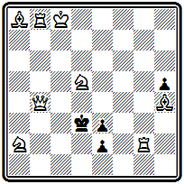
Мат в 2 хода
Блестящий первый ход 1. Ф d 6 предоставляет королю в добавление к имевшемуся в начальном положении еще четыре свободных поля. Отступления короля приводят к четырем ответам белого коня: 1... Крс4(с2) 2. К:е3#; 1... Кр d 4(е1Ф) 2. К b6# ; 1 ... Кре4 2. Ке7 # ; 1 ... Kpd 2 2. К b 4 #. Очень красиво построение, выполненное экономично, без белых пешек.
Интересны проблемы Г. Бордмана, добившегося успехов уже в 12-летнем возрасте. В задаче № 000 есть любопытные тонкости.
№ 000
Г. Бордман «Холиок трэнскрипт», 1881 г. I приз
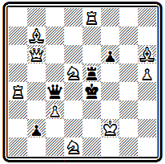
Мат в 2 хода
После 1. Ф b 5 Ф b (:а)4 включение белого ферзя на d3 позволяет матовать батареей, для чего надо отнять конем другое свободное поле f5. Однако выполняется это только путем 2. К5е3#, так как другой ход, также отнимающий это поле,—2. Ке7, не проходит из-за развязывания черной ладьи е5. Аналогично на 1… f 5 (Л~) годится лишь 2. К f 4#, но не 2. К b 4? Далекий предшественник современных комбинаций в попытках.
Пример № 000 типичен для английского стиля
№ 000
Г. Бордман Филадельфийский конкурс, 1876 г. II приз
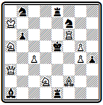
Мат в 2 хода
На доске обилие черных фигур, обладающих большой свободой и создающих в результате цугцванга многочисленные варианты.
Мотивы, делающие возможными маты после ходов черных, еще весьма элементарны, в подавляющем большинстве это простое отвлечение:
1. Cg 1 Ле2 2. Ф: a 1#, 1... К b ~ 2. Кс6# и т. д. Только три мата, из общего числа 14, осуществляются с использованием момента блокирования: 1... Ле6 2. Л f 5 # , 1 ... Ле4 2. Кf3 # и 1... Сd4 2. Ch 2 # .
Весьма близка к рассмотренной по механизму позиция № 000.
№ 000
Д. Никс «Дизайн энд уорк», 1881 г. II приз

Мат в 2 хода
Расположение основных действующих сил — белого ферзя и черных ладьей - относительно короля одинаково, совпадают и многие варианты. Однако имеются и различия, и притом настолько существенные, что судьи, несмотря на наличие такого близкого предшественника, сочли возможным отметить задачу высоким отличием. Игра добавленного черного слона d1 создает два интересных варианта с перекрытием черной ладьи: 1. Cc 7 Cg 4 2. Ф f 4 # и 1... Ch5 2. Ф: h 8 #. Получающиеся в этих вариантах маты не новы. Они проходили как в первой задаче, так и в самой второй при игре ладьей, однако новой является идейная мотивировка возможности их появления при ходе слона.
Задача № 000 выделяется красивым и трудным первым ходом
№ 000
В. Мередит « Дюбук чесс джориэл», 1889 г. I приз

Мат в 2 хода
1. Ф d 2, уводящим белого ферзя с активной позиции в засаду. Основные варианты: 1... Kpd6 2. Кс 4#; 1... Ф :b3 2. Kd7#; 1... Ф :f3 2. Фd4#; 1... Ф: d 2 2. Кс4#; угроза 2. Ф h 2 # .
Автор этого произведения В. Мередит обычно строил задачи с ограниченным материалом. В честь него двухходовки, в которых общее число участвующих фигур не превосходит 12, стали называть «мередитами». Сборник его 100 задач вышел в 1916 г. (60).
Американские композиторы раньше других обратили внимание на тактические идеи, заключающиеся в ходах черных фигур, и начали их активно разрабатывать в двухходовой форме. В первую очередь это относится к идее перекрытия. В трех следующих иллюстрациях указанный тактический момент является основой авторского замысла.
В примере № 000 мотив перекрытия черных фигур пронизывает все решение.
№ 000
Д. Уэйнрайт «Вандерер », 1886 г. I приз

Мат в 2 хода
Первый ход 1. Cd 6, создающий угрозу 2. e 3#, одновременно перекрывает пешку d7, чтобы лишить черных возможности защищаться в варианте 1... с3 2. Ф f 7#, где белые, как и при 1... е3 2. Фа8#, пользуются перекрытием черной ладьи h3. В варианте 1... ef 2. е4# белые сами на матующем ходе выключают черного слона h7. В разветвлениях 1... d 3 2. ed # и 1... Л: f 3 2. ef # белая пешка е2 дает еще два мата. Она проявляет максимальную активность.
В проблеме № 000 идея перекрытия осложняется тонкими нюансами.
№ 000
Г. и Э. Бетманы «Нашвилл америкэн», 1887 г. II приз
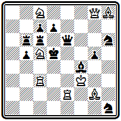
Мат в 2 хода
Перекрывается здесь связанный черный ферзь, а использует перекрытие сам белый король: 1. Лес2 Се3 2. Кре2# и 1... Се5 2. Кре3#.
Три брата Бетман — Джекоб, Эдгар и Генри — были одними из самых активных американских составителей двухходовок в конце XIX века, особенно последний, который продолжал работать и имел успехи до 20-х годов нынешнего столетия.
Авторы задачи № 000 стремились выразить идею перекрытия в наиболее полном виде.
№ 000
Г. и Э. Бетманы «Сент-Джонс глоб», 1888 г. I приз

Мат в 2 хода
Здесь черная ладья h2 четырежды перекрывает слонов: 1. Ка 3 Л g2 2. Кр :h3#; 1… Л f2 2. Kp:g3#; 1... Ле2 2. Л d3# ; 1 ... Лd2 2. С b 2#. Черные слоны, становясь на поля второй горизонтали, в свою очередь перекрывают ладью, что ведет к 2. К:с2 #. Эта композиция показательна в том отношении, что ради максимального представления идеи авторы отступают от одного из основных требований английской школы—отсутствия дуален. Здесь дуали есть в варианте 1... C g 2 и при уходе ладьи d5 с пятой горизонтали. Некоторое ослабление формальных требований вообще характеризует американскую двухходовку конца XIX века в отличие от ортодоксальной английской школы.
Намного опередила свое время задача № 000, воплощающая в весьма полном виде и хорошей форме идею развязывания белых фигур.
№ 000
О. Вюрцбург «Филадельфиа телефон», 1892 г.

Мат в 2 хода
Интересно и то, что автор отказывается от характерной для английской школы формы цугцванга и строит задачу на угрозу. После 1. С h 3 грозит 2. Ле6#. В вариантах 1... Cd 7 2. Kg 6# и 1... Cf 7 2. Кс6# черные развязывают белого слона, а в разветвлениях 1 ... К b 6 2. Ле4 # и 1... Кс5 2. Лd5 # —белую ладью. Новое в последних композициях заключается в том, что в них основу замысла и содержания составляют тактические идеи, представляемые в ряде параллельных вариантов. Открытие возможности такого построения задач составляет заслугу американских проблемистов, которые проложили путь к быстрому овладению идейным богатством современной двухходовки к началу XX века заняли ведущее положение в данной области. Это открытие оказало значительное влияние на весь дальнейший ход развития двухходовки, в частности на творчество самих английских композиторов.
Глава 12
СТАНОВЛЕНИЕ СОВРЕМЕННОЙ КОМПОЗИЦИИ В РОССИИ
Пионер русской композиции .
«Шахматный листок» , и отдел «Всемирной иллюстрации».
Композиция в журналах .
«Теория шахматных задач»
Тяжкий путь прошло русское шахматное движение. И все же, несмотря на узость базы этого движения, неизбежную в пору, когда культура была недоступна трудовому народу, на отсутствие общественной поддержки и прямые препоны, чинимые властями предержащими, русское шахматное искусство уже в XIX веке добилось выдающихся достижений, завоевавших ему уважение и славу во всем мире.
Сказанное целиком относится и к отечественной шахматной композиции.
Основоположником шахматной композиции в нашей стране был первый русский мастер . Его книга «Шахматная игра, приведенная в систематический порядок...», выпущенная в 1824 г. (61), содержала и материалы по композиции. Помимо ряда известных задач и этюдов (стратагем, как тогда выражались), Петров поместил здесь свою оригинальную задачу, символически изображающую «бегство Наполеона из Москвы в Париж» (№ 000).
№ 000
А . Петров 1824

Мат в 14 ходов
Поле a1 изображает Москву, h8 — Париж, черный король — Наполеон, белые кони — русская кавалерия, диагональ h1-a8 — река Березина, при переправе через которую русские могли пленить Наполеона. Решение развертывается так: 1. Kd2+ Kpa2 2. Кс 3+ Кра 3 3. К b1+ Кр b4 4. Ka2+ Kpb5 5. Кс 3+ Кра 6 6. Kb4+. Здесь ведет к цели 6. Фа8#, и Петров замечает: «Ферзем следовало преградить путь Наполеону, тогда бы он не ушел в Париж и был бы ему шах и мат». Кони преследуют короля дальше: 6... Кра7 7. К b 5+ Кр b 8 8. Ка6+ Крс8 9. Ka 7+ Kpd 7 10. К b 8+ Кре7 11. Кс8+ Kpf 8 12. Kd 7+ Kpg 8 13. Ke 7+ Kph 8 14. Kpg 2 # .
Интерес к композиции Петров сохранял на протяжении всей своей шахматной деятельности. В 1845 г. в новосозданном журнале «Иллюстрация» он основывает первый русский шахматный отдел, где систематически публикует задачи. Уже 2 июня 1845 г. он воспроизводит знаменитую «индийскую задачу» с любопытным замечанием: «В журналах «Кроникл» и «Паламед» явилась удивительная задача. Она пожаловала издалека, из Ост-Индии, и в европейском шахматном мире наделала много шума. Многие известные игроки бились с нею весьма долго и отложили попечение, полагая, что в рисунке задачи есть ошибка; другие, однако же, напрягли все свои силы, имена разгадавших напечатаны; их немного сравнительно с числом играющих в Англии, Франции и Германии. Задача так понравилась, что некоторые игроки пришли в восторг и воспели победу свою в стихах: спешим сообщить и нашим читателям это чудо».
Здесь же Петров печатал «Сцены из жизни шахматных игроков», в которых по ходу изложения приводил свои оригинальные композиции. Из них выделяется задача № 000 с неожиданной заключительной позицией цугцванга:
№ 000
А. Петров «Иллюстрация» 1845
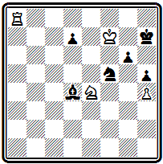
Мат в 5 ходов
1. Kg 5+ Kph 6 2. Л h 8+ C : h 8 3. Kpg 8 Kd 6 4. Kp : h 8, и черные могут ходить только конем, на что следует 5. Kf 7 #.
Лучшим достижением Петрова является проблема № 000.
№ 000
А. Петров «Шахматный листок» 1863
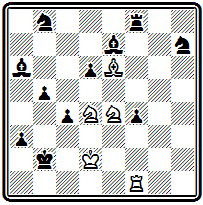
Мат в 11 ходов
После эффектного вступления белые осуществляют тонкую, далеко рассчитанную жертву слона для отвлечения черной пешки. В ходе решения возникают три правильных матовых позиции. 1. Кс3 а2 2. Ла1 Кра3 (2... Kp : a 1 3. Kpc 1 и 4. Кс2#) 3. Кс2+ Кр b 3 4. Л:а2 (с угрозами 5. Ла1 и 5. Ла3+) 4... Cf 6 (теперь напрашивается попытка использовать отвлечение слона путем 5. Kpc 1 и 6. Ла3#, но у черных находится защита 5... b 4!; поэтому белые предварительно жертвуют слона) 5. Ла 3+ Кр b 2 6. Kd1 + Kpb1 7. С:с4 (грозит 8. Са2# —первый правильный мат; черные вынуждены принять жертву) 7... bc 8. Кс3+ Кр b 2 (на 8... С:с3 следует 9. Кр:с3 со вторым правильным матом 10. Ла1#) 9. Ла2+ Кр b 3 (вновь получилась позиция, которая была после 4... Cf 6, но пешки b5 уже нет, и белые беспрепятственно осуществляют старую угрозу) 10. Kpc 1 Kp :с3 11. Ла3# (третий правильный мат). В позиции этой задачи добавлен черный конь h7 для устранения дуали. указанной А. Хачатуровым. Без коня кроме авторского 4. Л:а2, возможно 4. К:а2 (с угрозами 5. Кс1+ и 5. Кс3) 4... b 4 5. Cd 5 (с теми же угрозами) 5… Кр b 2 6. Ка: b 4 с3+ 7. Kpd 1 Се2+ 8. Кр:е2 f 3+ 9. Kpd1 и 10. Kd 3 # .
Эта задача свидетельствует о глубоком понимании Петровым принципов современной композиции и его высоком мастерстве.
Не меньше, чем обычные задачи, Петрова интересовали задачи на обратный мат, которые в те времена называли «киперганями» (от французского выражения «qui perd gagne» — «кто проигрывает, тот выигрывает»). В них задание состоит в том, что белые, начиная, заставляют черных дать себе мат в указанное число ходов. Известны задачи Петрова на обратный мат в 29,42 и даже 73 хода. Правда, позднее обнаруживались более короткие побочные решения.
Среди решающих даже шло своеобразное соревнование в «укорочении» киперганей, в котором особенно преуспевал . Киперганями много занимался также выдающийся русский мастер , который в гг. опубликовал в «Дейче шахцейтунг» работу «Теория киперганей».
В виде шутки в одном рассказе Петрова из серии «Сцены из жизни шахматных игроков» приводится позиция с двойным заданием: прямой мат в 2 хода и обратный мат в 7 ходов.
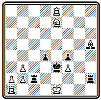
Мат в 2 хода и обратный мат в 7 ходов
Первое задание выполняется элементарно: 1. Kd 5+ второе интереснее: 1. Кс6+ 2. Ке5+ 3. Kd 7+ 4. Кс5+ 5. Cg 6++ 7. Kpa 1 Л: d1# .
В 1859—1863 гг. выходил «Шахматный листок» — первое периодическое издание в России, целиком посвященное шахматам. В этом журнале, редактировавшемся , был постоянный отдел композиции, где помещались оригинальные произведения русских авторов.
Здесь увидела свет подробная информация о крупнейшем событии композиторской жизни того времени — Лондонском конкурсе 1862 г. В связи с обнаружением дефектов в задачах Кэмпбелла, отмеченных высокими отличиями, журнал выдвинул предложение о предварительной публикации всех представляемых задач для возможности их тщательной проверки.
Интересны общие замечания о трудности объективного присуждения в конкурсах: «Для оценки шахматных проблем не существует и не может существовать никаких твердых правил. Оригинальность основной мысли, изящество выполнительных маневров, трудность решения—составляют главные достоинства проблемы. В том все согласны. Но какая мысль оригинальнее, какой маневр красивее, какое решение труднее — на это мерила нет, и многое зависит тут от личных взглядов каждого. Согласие суждения является здесь лишь при сравнении произведений уж очень различных между собой по достоинству.., но спросите любителей: чьи проблемы лучше — Байера или Хили, вы непременно получите разногласный ответ».
Несколько раньше в журнале расшифровывалось понятие идеи задачи: «Всякая сколько-нибудь хорошая задача имеет свою основную мысль, свою идею; иные основаны, например, на пожертвовании одной или нескольких шашек, другие на выигрыше времени, на двойном шахе, на превращении пешки в известного офицера и пр. и пр. Конечно, не всегда легко с точностью определить словами, в чем именно заключается идея той или другой проблемы, но всякий истинный шахматист сознает, чувствует ее присутствие, подобно тому как дилетант музыки чувствует идею мелодии даже и тогда, когда не сумеет перевести ее на простой человеческий язык».
В «Шахматном листке» печатал свои оригинальные задачи Петров. Здесь же выдвинулись новые русские композиторы. Наибольшую активность среди них проявляли , , Г. Зиссерман (выступавший под инициалом «Г. З.») и др.
В задаче № 000 интересен маневр белого слона, использующий цугцванг черных:
№ 000
И. Николаев «Шахматный листок», 1859 г.
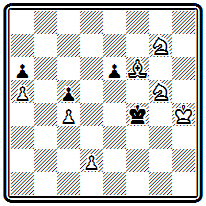
Мат в 5 ходов
1. С b 2 е5 2. Cc 1 е4 3. d 4+ e 3 4. Са3 и либо 4... cd 5. Cd 6#, либо 4... е2 5. Cc 1#.
Тонкость миниатюры № 000 состоит в точном порядке ходов белых, создающих матовую сеть:
№ 000
Г. Пономарев «Шахматный листок», 1862 г.

Мат в 4 хода
1. Л g6 2. d6 3. Се6 и 4. Л g 8 # .
На диаграмме № 000 приведена первая русская задача на ретроградный анализ. Так называется область композиции, где решение построено на анализе предшествующей игры. Целью анализа обычно является доказательство возможности или невозможности позиции, определенного хода и т. п.
№ 000
В. Пеликан «Шахматный листок», 1862 г.

Мат в 3 хода
В данном случае легко убедиться, что последним ходом черных мог быть только g7-g5 и, следовательно, возможно взятие на проходе: 1. hg + Kph 5 2. gh Kph 4 3. h 8Ф(Л)#.
В 60-е годы выдвигается замечательный мастер и проблемист . В композиции он наибольшую известность приобрел работами над изобразительными, или скахографическими, как он их называл (от греческих слов «скахо» — шахматы и «графо» — пишу), задачами.
В 1867 г. вышла книга Шумова «Собрание скахографических и других шахматных задач, в том числе полный шахматный букварь, маты политические, юмористические и фантастические» (62). Всего здесь помещено 89 композиций, в подавляющем большинстве изобразительные и условные задачи. Все же нельзя не пожалеть, что чрезмерное увлечение «скахографией» отвлекало Шумова от области собственно композиции. Ведь ортодоксальные задачи мастера на прямой мат, например позиция № 000, в которой белый ферзь проявляет большую настойчивость в овладении полем е7, свидетельствуют о наличии недюжинного таланта:
№ 000
И . Шумов 1867 г .
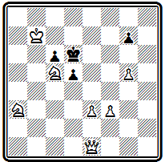
Мат в 4 хода
1. Фh4 d4 2. g6 de 3. Фg5 е 4. Кс4#; 1... g6 2. Фh7 d4 3. Фd7+ Кр:с5 4. Ф:d4#; 1... Кре7 2. g6+ Kpe8 3. Kpc7 Kpf8 4. Фd8# , 2... Kpd6 3. Фg5 d4 4. Kc4+ или 3... Кр:с5 4. Фе7# .
Большинство произведений Шумова, созданных им уже после выхода книги, увидело свет в шахматном отделе журнала «Всемирная иллюстрация». Шумов вел этот отдел непрерывно на протяжении 12 лет, с момента основания журнала в 1869 г. и до самой своей смерти. Отдел сыграл значительную роль в развитии отечественной композиции. Всего в нем за это время было помещено около 600 задач, в большинстве—оригинальные произведения русских авторов.
В помощь любителям композиции Шумов поместил в отделе заметку о «главных условиях, требующихся для составления хорошей задачи». Условия эти:
«1. Задача должна иметь одно решение, то есть первый ход белых должен быть единственный, ведущий к совершению заданного мата. У черных, напротив, чем больше ходов для защиты, тем лучше, потому что задача от множества вариантов делается труднее;
2. Двухходовые задачи отнюдь не должны начинаться с шаха, ибо такое решение слишком очевидно, в трех и более ходовых задачах первый ход с шахом допускается только в исключительных случаях, именно — когда шахов большой выбор, а второй ход белых особенно замысловат (без шаха, разумеется);
3. Все шашки, находящиеся в задаче, должны быть необходимы для устранения другого решения и занимать натуральное положение, то есть не противное правилам игры; лишние шашки допускаются только в скахографических задачах».
В другом месте Шумов высказывал еще одно положение: «Знаменитые сочинители пришли к тому убеждению, что достоинство всякой шахматной задачи заключается не в трудности ее решения, зависящей от множества заданных ходов, а в трудности решения, зависящей от хорошо скрытой идеи мата, при возможно меньшем числе ходов задачи».
Невзирая на колоссальные трудности, которые испытывало в своем развитии русское шахматное движение, оно медленно, но неуклонно росло. Отсутствие организации и постоянного печатного органа особенно отражалось на состоянии композиции. Тем не менее и в это время в России появляется ряд даровитых проблемистов.
Печатью таланта отмечены задачи , начавшего работать еще во времена михайловского «Листка» и продолжавшего активные выступления до 80-х годов. В проблеме № 000 остроумно и оригинально осуществлено двукратное пожертвование белых коней на поле d5:
№ 000
С. Яцкевич «Шахматный листок», 1861 г.
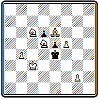
Мат в 4 хода
1. Сс8 Кр: d 5 2. Ке7+ Кре4 3. Kd 5 Kp : d 5 4. С b 7 # .
В примере № 000 интересен красивый правильный мат, получающийся в главном варианте после серии тихих ходов с жертвами белых фигур:
№ 000
С. Яцкевич «Всемирная иллюстрация», 1873 г.
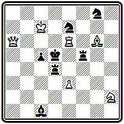
Мат в 4 хода
1. Kf 3 Л: f 3 2. Cd 3 Л: d 3 3. Ле4 Кр:е4 4. Фе6#. Дополнительный вариант: 1... С:е3 2. Cf 7 Л: f 3 3. Л:е3+; угроза 2. е4+.
Выдающимся достижением является задача № 000 А. Маркова, в будущем известного русского математика, академика. Легкое построение, изящная игра, содержащая четыре равноценных, четко отделанных варианта, завершающихся правильными матами при положении черного короля в самых различных участках доски,— все это и теперь производит сильное впечатление.
№ 000
А. Марков «Дейче шахцейтунг», 1874 г.

Мат в 4 хода
1. Се6 h 4 2. Ked 4 Kpc 7 3. с5 Кр b 7 4. Ла7#; 1... Крс7 2. с5 Кр b 7 3. Ked 4 Кр:а6 4. Сс8#; 1... Крс5 2. Ке5 Кр b 4 3. Kd 3+ Kpb 3 4. Kd4#; 1... Кр : е 6 2. Ke5+ Kpf5 3. Kd 4+ Kpg 5 4. Kef 3#. Эта задача успешно выдерживает сравнение с лучшими произведениями крупнейших проблемистов того времени.
Широкой известностью пользовались композиции . В главном варианте задачи № 000 жертва обеих тяжелых фигур приводит к картинному правильному мату:
№ 000
И. Кос «Всемирная иллюстрация», 1873 г.
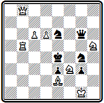
Мат в 3 хода
1. Ф g 8 Ф :g 8 2. Лf5 Кр: f 5 3. Cd 3#.
Позиция № 000 является сравнительно редким в русской композиции примером многоходовки. В ней осуществлен тонкий маневр последовательного приближения белого коня к черному королю:
№ 000
И. Кос «Всемирная иллюстрация», 1875 г.

Мат в 8 ходов
1. Cg2 g3 2. Кf3 Лb2 3. Kd2+ Лb7 4. Cf3 (слон не должен отставать от коня, чтобы защищать его от нападения ладьи) 4... g2 5. Ке 4 Л b3(f7) 6. Кс 3(f6)+ Л b7 7. Kd 5—цель достигнута, неизбежен мат 8. Kdc 7 # или К b6# . (в оригинале конь e1 стоял на поле h4, что позволяло матовать в 8 ходов другими путями)
В задаче № 000 происходит поединок между ферзем и ладьей — куда бы ни отступила черная ладья, белый ферзь находит путь для осуществления решающего шаха с одновременным ударом на ладью:
№ 000
И . Кос « Шахматы », 1890 г .
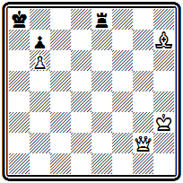
Мат в 4 хода
I . Фd2 Лf8 2. Фd1 Kpb8 3. Фd6+, 2... Ле8 3. Фа4+ и 2... Лh8 3. Фа1+; 1... Лh8 2. Фа5+ Крb8 3. Фе5+ ; 1 ... Крb8 2. Фf4+ Кра8 3. Фа4+. Во всех вариантах мат дается на четвертом ходу взятием ладьи на одном из полей восьмой горизонтали.
Наиболее активным и плодовитым композитором был . Англичанин по отцу, он родился и вырос в России, работал начальником одного из алтайских заводов. Составлять задачи он начал в 1868 г. и опубликовал около 300 произведений. Кларк подготовил сборник своих задач, но, к сожалению, он остался неизданным.
Чрезмерная продуктивность не могла не отразиться на качестве произведений Кларка, что отмечали и современники, но лучшие его задачи свидетельствуют о незаурядном мастерстве. Проблема № 000 содержит три варианта, заканчивающиеся правильными матами:
№ 000
Д . Кларк « Радуга », 1886 г .

Мат в 3 хода
1. Фd1 (угроза 2. Ф:а4+ Кр:а4 3. К:с3#, есть еще - 2. Ф b 1#) 1... К: d 5 2. Ф h 5 Кр:с6 3. Фе8# и 1... с2 2. Фd2 К: d 5 3. Kd 4 # .
Задача № 000 построена в духе ранней английской школы.
№ 000
Д. Кларк «Всемирная иллюстрация», 1877 г.
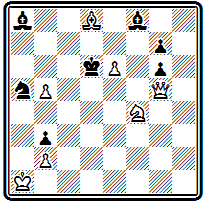
Мат в 3 хода
Первый ход 1. С b 6 создает короткую угрозу 2. Фс5#. В главном варианте получается цугцванг: 1... К b 7 2. Кр b 1— конь, защищаясь, запер слона в углу, а ходы свободных фигур ведут к мату: 2... К ~ 3 . Фс5 # и 2... Се7 3. Ф d 5 # .
Подобный прием построения трехходовок пользовался некоторой популярностью у русских композиторов 80-х годов.
В примере № 000 вступление
№ 000
Г. Зиссерман «Шахматный вестник», 1886 г.

Мат в 3 хода
1. С c 4 создает угрозу 2. Ф d 6#. Если черные защищаются 1... К: b 7, то после тихого хода 2. Kpg 6 они попадают в цугцванг. При защите 1... Kf 7 решает 2. Kd 8.
Сложнее построена задача № 000, в которой позиция цугцванга создается после двух выжидательных ходов слона через всю большую диагональ:
№ 000
Н. Извольский «Шашечница», 1891 г.

Мат в 3 хода
1. Ca1 f 4 2. Ch 8. Слон не может задержаться ни на каком другом поле, так как это разрушит подготовленные белыми маты. На 1... с6 ответ 2. С h 8 не проходит только из-за 2... Се5!, зато теперь возможно 2. Ф: g 3 с матом 3. Л: d 6 #.
Поистине героические усилия для организации шахматного движения в России прилагал . Дважды он предпринимал попытку создать русский шахматный журнал: в гг. издавал «Шахматный листок», а в гг.—«Шахматный вестник». Сам Чигорин композицией не занимался, но в своих журналах уделял ей значительное внимание и место.
В «Шахматном листке» в гг. была напечатана большая работа известного шахматиста и композитора «Теория шахматных задач». В этой статье он ставил целью «реабилитировать шахматные задачи в глазах любителей, разъяснив по мере сил и возможности коренную связь проблем с комбинациями середины игр, их практическую пользу, а также свести воедино современные требования, простираемые к составителям проблем». Гоняев пишет дальше: «Польза изучения проблем многоразлична.
Во-первых, начинающий любитель приучается к осмысленной игре: решая задачу, он обязательно должен преследовать не только заданную автором цель, но и думать за своего воображаемого противника, то есть изыскивать не только наилучшие ходы для своей партии, но предусматривать наилучшие возражения на оные...
Во-вторых, комбинации шахматных задач принадлежат к остроумнейшим и изящнейшим, притом они вылиты в задачах в античную форму: на доске — ни одной лишней шашки, в решении — ни одного лишнего хода!
В-третьих, очень часто идея задачи заключается в иллюстрации относительной силы фигур между собой и в их связи со свободной или не свободной доской... здесь живой пример, изложенный в блестящей, резкой форме, надолго запечатлевается в уме».
Гоняев подробно знакомит читателей с общими принципами композиции, с требованиями, предъявляемыми к задачам. Затем он «делает попытку составить свод наиболее интересных шахматных стратагем, составляющих содержание шахматных задач...», иначе говоря, дать классификацию и примеры основных задачных идей. Эта часть, как он сам пишет, составлена по сочинению М. Ланге «Руководство по шахматным задачам». В статье приведено большое количество иллюстраций, почти исключительно русских авторов. Работа Гоняева печаталась с перерывами в четырех номерах журнала и осталась незавершенной.
В том же «Шахматном листке» Чигорин в 1877 г. предпринимает попытку провести первый русский конкурс составления шахматных задач, которая, однако, оказалась безуспешной. В статье, посвященной конкурсу, Чигорин писал: «Из числа 18 задач, присланных на конкурс, 14 оказались или неверными, или совсем слабыми... Только две конкурсные задачи могут несколько претендовать на внимание любителей задач. Но и они оказываются далеко не удовлетворяющими основным требованиям современного проблемного искусства».
Одна из этих задач приведена на диаграмме № 000. Автор ее так и остался неизвестным. По поводу нее Чигорин заметил: «Здесь мы видим слишком большой аппарат в сравнении со скромной и избитой темой: иллюстрацией длинных ходов ферзя; нет сносных вариантов, матовые позиции нечисты; расстановка страдает скученностью шашек и вообще неправдоподобна, черный король «в пату» и не имеет ни одного выхода».
№ 000
NN «Шахматный листок», 1879 г.

Мат в 3 хода
Решение задачи таково: 1. Ф b 8 Фе6 2. Ke 5+ fe 3. К:е3#; угроза 2. Kd 6+ K : d 6 3. Ф b 3#. (На 1… Фе6 матует еще 2. K : e 3+ и 2. Kd 6+ )
Чигорин был отлично знаком с принципами композиции и строго руководствовался ими при отборе задач для редактируемых им журналов и газетных отделов. Об этом свидетельствуют помещаемые им ответы по поводу присылаемых произведений.
Энергичная деятельность Чигорина, его выдающиеся творческие и спортивные успехи сыграли свою роль. К началу 90-х годов в России начинается заметный подъем шахматной жизни.
Глава 13
ПОДЪЕМ РУССКОЙ КОМПОЗИЦИИ В КОНЦЕ XIX ВЕКА
. Композиция в «Шахматном обозрении» и «Шахматном журнале».
Конкурсы составления задач. Творческие искания русских композиторов.
, его творчество и теоретические работы
В связи с ростом шахматного движения в России с конца 80-х годов намечается и подъем композиции. Значительную роль в этом сыграло возникновение регулярных шахматных отделов в ряде периодических изданий, где русские проблемисты обрели широкую арену для публикации своих произведений.
В Петербурге и после смерти Шумова продолжал выходить отдел в журнале «Всемирная иллюстрация». В 1889 г. появился отдел в газете «Новое время», редактирование которого с 1890 г. перешло в руки . В 1890 г. основывается отдел в популярном журнале «Нива», сначала под редакцией , а затем — Чигорина; год спустя возникает отдел в газете «Новости» и ряд других.